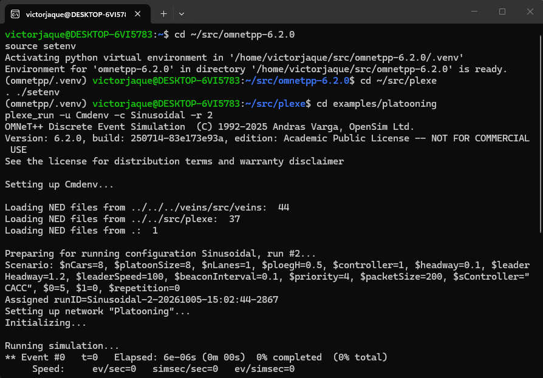
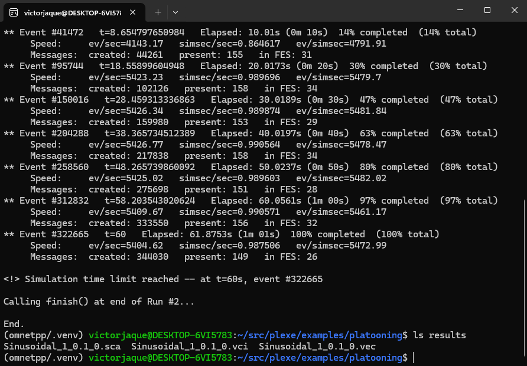
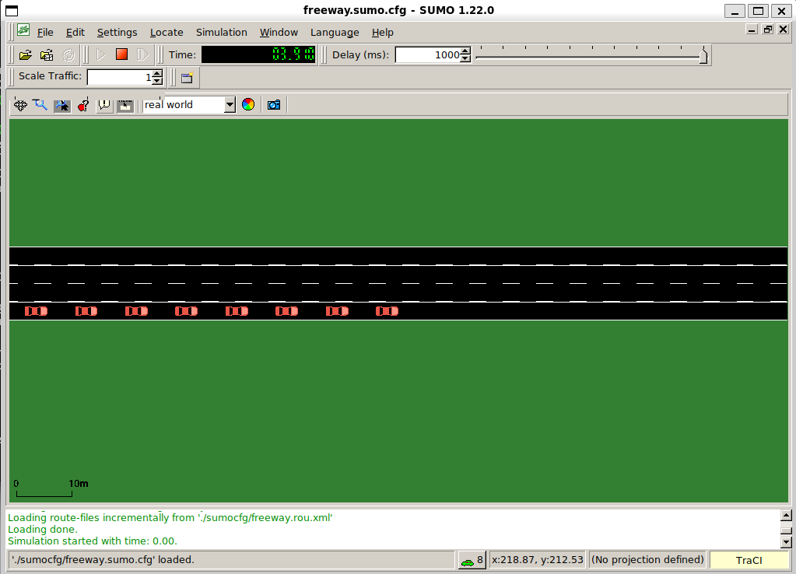

Primera simulación
Ahora vamos a correr tu primera simulación con Plexe. Primero vamos a preparar la terminal, después vamos a correr el ejemplo platooning, que viene con Plexe, y al final vamos a graficar sus resultados.
En esta simulación trabajan juntos los cuatro componentes que instalaste: SUMO mueve los autos, OMNeT++ simula los mensajes que se envían entre ellos, Veins conecta los dos simuladores y Plexe agrega la conducción en pelotón.
Esta página sigue el tutorial oficial Example 1 - Running Plexe.
1 · Antes de empezar
Ahora vamos a preparar la terminal. Una terminal nueva de Ubuntu no encuentra los programas de OMNeT++ ni los de Plexe hasta que cargas sus entornos: primero el de OMNeT++ y después el de Plexe.
Para esto necesitas Plexe instalado: los pasos 1 a 5 de Instalación. Para graficar, en la sección 6, también necesitas el paso 6.
En una terminal de Ubuntu, nueva o la que ya tengas abierta, ejecuta los siguientes comandos:
Fuente: guía oficial de Plexe (Step 1: Install OMNeT++). Es lo mismo que en el paso 2.2 de Instalación.
Esto carga el entorno de OMNeT++: plexe_run, el programa que corre las simulaciones, usa opp_run de OMNeT++. Debe aparecer Environment for 'omnetpp-6.2.0' … is ready, como en el paso 2.2.
En la misma terminal, ejecuta los siguientes comandos:
Fuente: tutorial oficial de Plexe, Step 0. Building Plexe.
El setenv de Plexe agrega ~/src/plexe/bin al PATH: ahí están plexe_run y genmakefile.py, que se usan más abajo. Solo funciona dentro de ~/src/plexe, y si todo está bien no muestra nada.
Los dos entornos se cargan en cada terminal nueva. SUMO no necesita nada: el paso 3.3 lo dejó en el PATH de todas las terminales, y Plexe lo abre por su nombre, sumo-gui o sumo.
2 · El ejemplo
Ahora vamos a ver qué simula el ejemplo platooning, antes de correrlo. Está en ~/src/plexe/examples/platooning.
Según el tutorial, el ejemplo compara el ACC con los controladores cooperativos de Plexe. El ACC solo usa su radar, que mide la distancia y la velocidad del auto de adelante. Los cooperativos además reciben datos de otros autos del pelotón por comunicación inalámbrica (más detalle en Controladores). Con ACC y un tiempo de separación de 0.3 s el pelotón es inestable, y con 1.2 s es estable. Los cooperativos se mantienen estables aunque los autos vayan muy cerca, gracias a esa comunicación.
- 8 autos en un solo pelotón, en una pista, a 100 km/h.
- Los autos aparecen en
t = 1 sy la simulación dura 60 s. - Hay dos escenarios:
Sinusoidal: desdet = 5 sel líder acelera y frena de forma sinusoidal, con amplitud de 10 km/h y frecuencia de 0.2 Hz.Braking: ent = 5 sel líder frena a 8 m/s².
Cada escenario tiene 6 corridas, una por controlador. El número de corrida es el que se pasa con -r:
Corrida (-r) |
Controlador |
|---|---|
| 0 | ACC, tiempo de separación 0.3 s |
| 1 | ACC, tiempo de separación 1.2 s |
| 2 | CACC |
| 3 | PLOEG |
| 4 | CONSENSUS |
| 5 | FLATBED |
Fuente: tutorial oficial, Description, y el omnetpp.ini del ejemplo, secciones [General], [Config Sinusoidal] y [Config Braking]. El tutorial habla de cinco configuraciones por escenario; el omnetpp.ini de Plexe 3.2 tiene seis.
3 · Correr la simulación
Ahora vamos a correr el ejemplo. Primero vas a correr una sola simulación con la ventana de SUMO, para ver a los autos (paso 3.1). Después vas a correr las demás sin ventanas, para tener los resultados de todos los controladores (paso 3.2).
3.1 Con ventanas
Vamos a correr la corrida 2 del escenario Sinusoidal, que usa CACC, con la ventana de SUMO abierta.
En la misma terminal, dentro de ~/src/plexe, ejecuta los siguientes comandos:
Fuente: tutorial oficial, Running the example.
plexe_runllama aopp_runde OMNeT++ con las librerías de Plexe y de Veins.-u Cmdenvcorre OMNeT++ en la terminal, sin su interfaz gráfica. La ventana que se abre es la de SUMO:[Config Sinusoidal]usasumo-gui.-c Sinusoidalelige la sección[Config Sinusoidal]deomnetpp.ini.-r 2elige la corrida 2: CACC.
En la carpeta del ejemplo, ./run hace lo mismo, porque solo llama a plexe_run. Los Casos prácticos usan esa forma.
Así debería verse tu terminal (inicio, abreviado):
(omnetpp/.venv) victorjaque@DESKTOP-6VI5783:~/src/plexe$ cd examples/platooning
plexe_run -u Cmdenv -c Sinusoidal -r 2
OMNeT++ Discrete Event Simulation (C) 1992-2025 Andras Varga, OpenSim Ltd.
Version: 6.2.0, build: 250714-83e173e93a, edition: Academic Public License -- NOT FOR COMMERCIAL USE
...
Loading NED files from ../../../veins/src/veins: 44
Loading NED files from ../../src/plexe: 37
Loading NED files from .: 1
Preparing for running configuration Sinusoidal, run #2...
Scenario: $nCars=8, $platoonSize=8, $nLanes=1, $ploegH=0.5, $controller=1, $headway=0.1, $leaderHeadway=1.2, $leaderSpeed=100, $beaconInterval=0.1, $priority=4, $packetSize=200, $sController="CACC", $0=5, $1=0, $repetition=0
...
Running simulation...
** Event #0 t=0 Elapsed: 6e-06s (0m 00s) 0% completed (0% total)
- Loading NED files de Veins, de Plexe y del ejemplo indica que OMNeT++ encontró los tres.
- Scenario muestra los parámetros de la corrida: 8 autos, controlador
CACC.
Ejemplo real: la carga de los entornos y el inicio de la simulación en el equipo de referencia

Así debería verse tu terminal (final, abreviado):
...
** Event #322665 t=60 Elapsed: 61.8753s (1m 01s) 100% completed (100% total)
Speed: ev/sec=5404.62 simsec/sec=0.987506 ev/simsec=5472.99
Messages: created: 344030 present: 149 in FES: 26
<!> Simulation time limit reached -- at t=60s, event #322665
Calling finish() at end of Run #2...
End.
Terminó bien cuando aparece Simulation time limit reached -- at t=60s y después End. En el equipo de referencia tardó alrededor de 1 minuto.
Para comprobar que quedaron los resultados, en la misma terminal, dentro de ~/src/plexe/examples/platooning, ejecuta el siguiente comando:
Fuente: el tutorial oficial indica que los resultados quedan en la carpeta results (Running the example). El comando ls lo agrega este manual para listarlos.
Así debería verse tu terminal:
(omnetpp/.venv) victorjaque@DESKTOP-6VI5783:~/src/plexe/examples/platooning$ ls results
Sinusoidal_1_0.1_0.sca Sinusoidal_1_0.1_0.vci Sinusoidal_1_0.1_0.vec
Son los archivos de la corrida 2 de Sinusoidal (más detalle en la sección 5).
Ejemplo real: así termina la simulación en el equipo de referencia

3.2 Sin ventanas
Ahora vamos a correr las 11 corridas que faltan, sin ventanas, para tener los resultados de los 6 controladores en los dos escenarios. Copia y pega el bloque completo: las corridas se ejecutan una tras otra.
Cuando termine la simulación del paso 3.1, en la misma terminal, dentro de ~/src/plexe/examples/platooning, ejecuta los siguientes comandos:
plexe_run -u Cmdenv -c SinusoidalNoGui -r 0
plexe_run -u Cmdenv -c SinusoidalNoGui -r 1
plexe_run -u Cmdenv -c SinusoidalNoGui -r 3
plexe_run -u Cmdenv -c SinusoidalNoGui -r 4
plexe_run -u Cmdenv -c SinusoidalNoGui -r 5
plexe_run -u Cmdenv -c BrakingNoGui -r 0
plexe_run -u Cmdenv -c BrakingNoGui -r 1
plexe_run -u Cmdenv -c BrakingNoGui -r 2
plexe_run -u Cmdenv -c BrakingNoGui -r 3
plexe_run -u Cmdenv -c BrakingNoGui -r 4
plexe_run -u Cmdenv -c BrakingNoGui -r 5
Fuente: tutorial oficial, Running the example.
SinusoidalNoGuiyBrakingNoGuison las mismas configuraciones, pero abrensumoen vez desumo-gui: no hay ventanas.- La lista no incluye
Sinusoidal -r 2porque ya la corriste en el paso 3.1. Las configuracionesNoGuiguardan sus resultados con el mismo nombre que las con ventanas, así que quedan todos juntos.
Así debería verse tu terminal:
4 · Qué deberías ver
Ahora veamos qué deberías haber visto en la ventana de SUMO durante la corrida del paso 3.1:
- Se abre la ventana de SUMO con una autopista vacía, y la simulación parte sola, sin apretar nada.
- En
t = 1 saparece el pelotón de 8 autos. - Los autos avanzan durante 60 s y la simulación se detiene.
Fuente: tutorial oficial, Running the example. Que la simulación parta sola lo indica <start value="true"/> en sumocfg/freeway.sumo.cfg.
Ejemplo real: la ventana de SUMO en el equipo de referencia

En el escenario Sinusoidal casi no se nota el movimiento
En este escenario el líder acelera y frena de forma sinusoidal, con una amplitud de 10 km/h en torno a 100 km/h (ver sección 2). En el equipo de referencia, en la ventana de SUMO no se notaba bien esa aceleración y ese frenado. En cambio, en el escenario Braking (-c Braking), donde el líder frena a 8 m/s², sí se ve el frenado del pelotón. Los gráficos de la sección 6 muestran el movimiento de los dos escenarios.
5 · Dónde quedan los resultados
Ahora vamos a ver dónde quedaron los resultados de las 12 corridas y cómo reconocer cada archivo.
Quedan en ~/src/plexe/examples/platooning/results/. Cada corrida deja tres archivos, como mostró ls results en el paso 3.1: un .vec (vectores), con los valores que la simulación registró a lo largo del tiempo, como la velocidad de cada auto; un .vci, el índice del .vec; y un .sca (escalares). Los gráficos de la sección 6 se hacen con los .vec.
El nombre de cada archivo es <escenario>_<controller>_<headway>_<repetición>:
Corrida (-r) |
Archivo de Sinusoidal |
|---|---|
| 0 | Sinusoidal_0_0.3_0.vec |
| 1 | Sinusoidal_0_1.2_0.vec |
| 2 | Sinusoidal_1_0.1_0.vec |
| 3 | Sinusoidal_2_0.1_0.vec |
| 4 | Sinusoidal_3_0.1_0.vec |
| 5 | Sinusoidal_4_0.1_0.vec |
Los de Braking se llaman igual, con Braking_ al comienzo.
El número del archivo no es el número de corrida
El primer número es el valor de controller en omnetpp.ini (0, 0, 1, 2, 3, 4), no la corrida. Por eso las dos corridas de ACC empiezan con 0 y se distinguen por el headway: 0.3 y 1.2.
Fuente: tutorial oficial, Running the example (carpeta results), y omnetpp.ini, líneas output-vector-file, output-scalar-file, **.numericController y **.headway.
6 · Graficar los resultados
Ahora vamos a convertir esos resultados en gráficos. Primero vamos a juntar los .vec de cada escenario en un solo archivo, y después vamos a dibujar los gráficos con dos scripts de R. Para esto necesitas R y Python, del paso 6 de Instalación.
En la misma terminal, dentro de ~/src/plexe/examples/platooning, ejecuta los siguientes comandos:
Fuente: tutorial oficial, Plotting the results.
genmakefile.py parse-config > Makefilegenera unMakefilea partir deparse-config, que indica qué escenarios leer:SinusoidalyBraking. Qué datos sacar de cada auto lo dicemap-config: distancia, velocidad relativa, velocidad, aceleración y aceleración del controlador.makejunta los.vecde cada escenario en un solo archivo:results/Sinusoidal.Rdatayresults/Braking.Rdata.
Así debería verse tu terminal:
Cuando termine make, en la misma terminal, dentro de ~/src/plexe/examples/platooning/analysis, ejecuta los siguientes comandos:
Fuente: tutorial oficial, Plotting the results.
Cada script deja cuatro PDF en analysis/:
| Gráfico | Sinusoidal |
Braking |
|---|---|---|
| Velocidad | sinusoidal-speed.pdf |
braking-speed.pdf |
| Distancia | sinusoidal-distance.pdf |
braking-distance.pdf |
| Aceleración | sinusoidal-acceleration.pdf |
braking-acceleration.pdf |
| Aceleración del controlador | sinusoidal-controller-acceleration.pdf |
braking-controller-acceleration.pdf |
Los nombres salen de las líneas ggsave de plot-sinusoidal.R y plot-braking.R.
Así debería verse tu terminal:
Ejemplo real: los gráficos en el equipo de referencia
7 · Problemas frecuentes
Si algo falla, busca aquí el mensaje que te apareció y cómo resolverlo.
| Síntoma | Causa | Solución |
|---|---|---|
. ./setenv responde current working directory does not look like a Plexe root directory |
Lo ejecutaste fuera de ~/src/plexe |
Ejecuta cd ~/src/plexe y repite . ./setenv |
command not found al usar plexe_run o genmakefile.py |
No cargaste el setenv de Plexe en esa terminal |
Repite Antes de empezar |
genmakefile.py responde Cannot check for OMNeT++ version. Is opp_run in your PATH? |
No cargaste el entorno de OMNeT++ en esa terminal | Repite Antes de empezar |
make se detiene con This Makefile has been generated for OMNeT++ version … |
El Makefile se generó con otra versión de OMNeT++ |
Vuelve a generarlo con genmakefile.py parse-config > Makefile |
Fuente: los mensajes salen de setenv y bin/genmakefile.py de Plexe 3.2.
8 · Siguiente paso
Ya corriste tu primera simulación. Ahora puedes pasar a los Casos prácticos: el Caso 1 parte del escenario Braking de este ejemplo y cambia un solo parámetro, el tiempo de separación h de Ploeg.